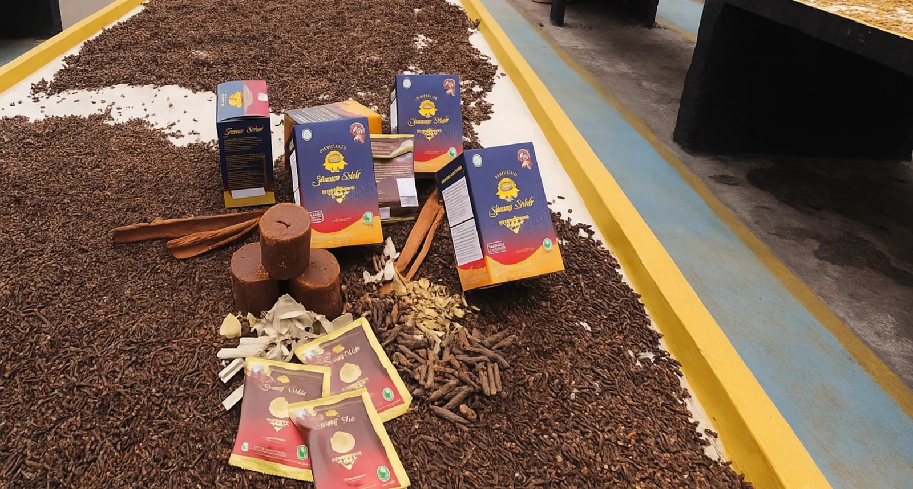

.jpg)
Dokumentasi
Dari kebun rempah Garut ke gelas Anda
Setiap sachet Gentong Mas diproses dari gula aren dan rempah pilihan yang diolah langsung di fasilitas produksi Ponpes Sadang Lebak.
Selengkapnya →
Minuman herbal tradisional yang diracik langsung oleh Ponpes Sadang Lebak, Garut — tanpa bahan pengawet, bersertifikat halal MUI dan izin edar BPOM.

Diproduksi oleh Ponpes Sadang Lebak, Karangpawitan, Garut, Gentong Mas menggabungkan gula aren dan jintan hitam pilihan menjadi minuman herbal yang menjaga daya tahan tubuh sekaligus menopang pendidikan santri secara gratis.
Bahan baku — gula aren, habbatussauda, lada hitam, kapulaga, kayu manis, dan bunga lawang — diperoleh langsung dari petani lokal Garut.
Baca kisah lengkapnya →
Setiap sachet Gentong Mas diproses dari gula aren dan rempah pilihan yang diolah langsung di fasilitas produksi Ponpes Sadang Lebak.
Selengkapnya →Dari lapak jalanan hingga apotek, Gentong Mas terus memperkenalkan manfaat herbal gula aren dan habbatussauda ke lebih banyak orang.
Selengkapnya →Perjalanan Ponpes Sadang Lebak membangun usaha Gentong Mas turut menjadi sorotan sejumlah media dan instansi pemerintah.
Selengkapnya →.jpg)
.webp)